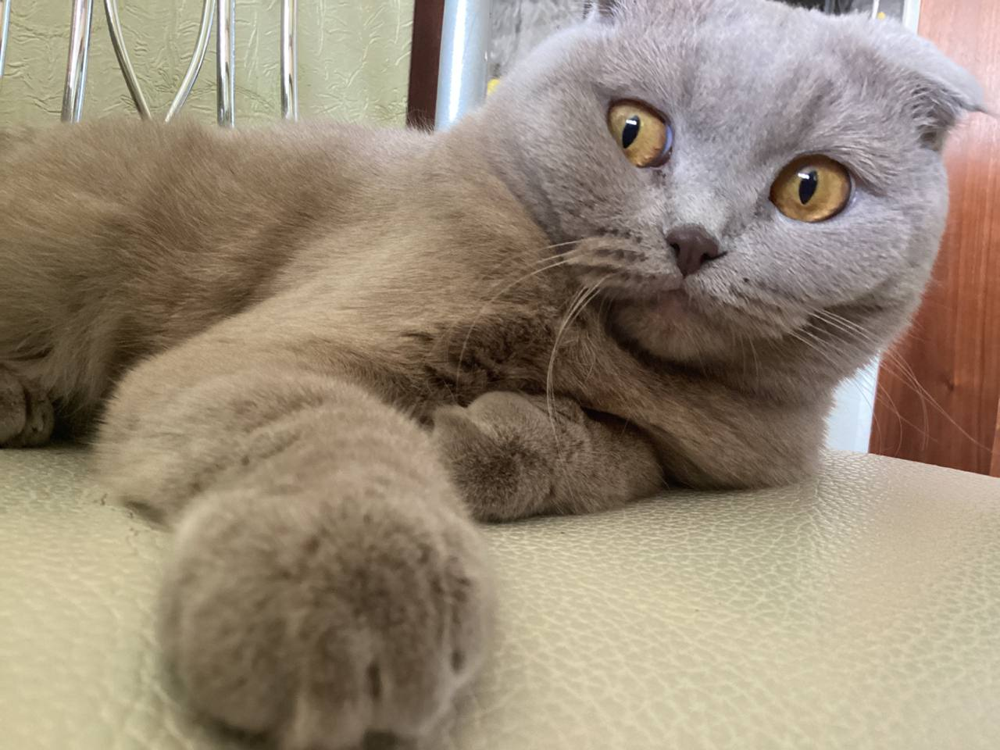
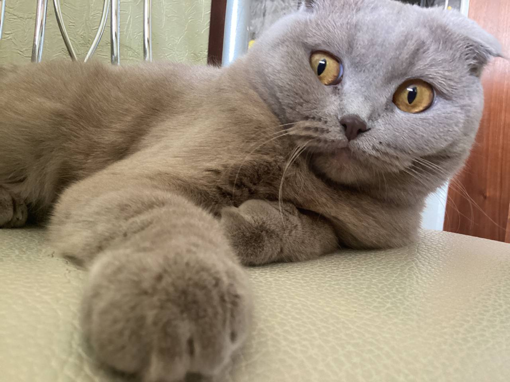

Другие названия: скоттиш фолд, шотландец, скоттиш, шотландский фолд
Шотландская вислоухая кошка – одна из самых молодых пород.
Ее отличают неповторимый внешний вид, грациозность и очень высокий уровень интеллекта.
Название породы: Шотландская вислоухая кошка
Страна происхождения: Великобритания, Шотландия
Время зарождения породы: 1961 год
Вес: 4-7 кг
Продолжительность жизни: 12-15 лет
Подробнее
 
